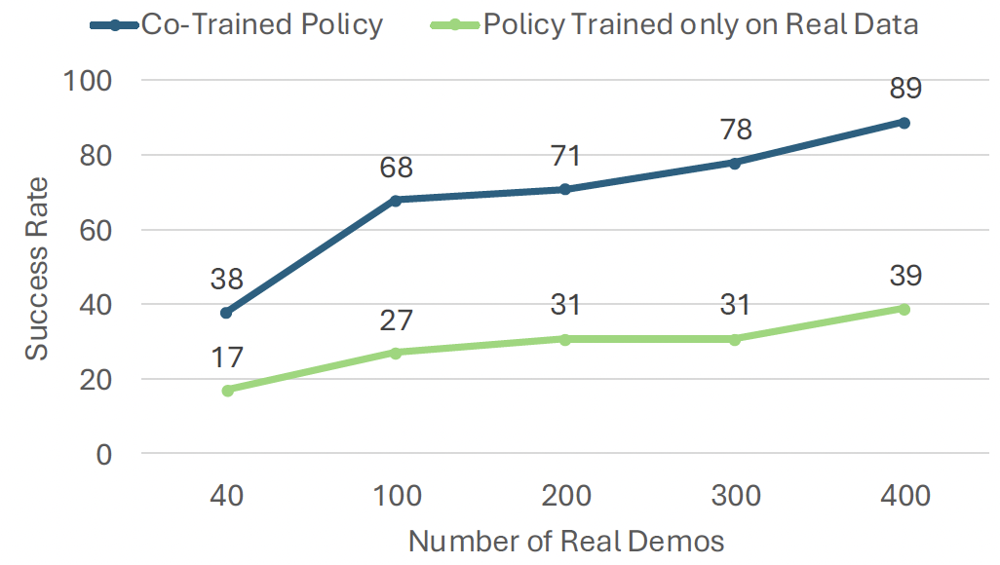
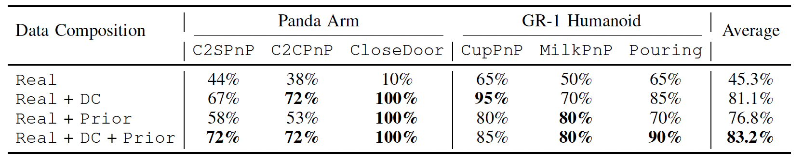
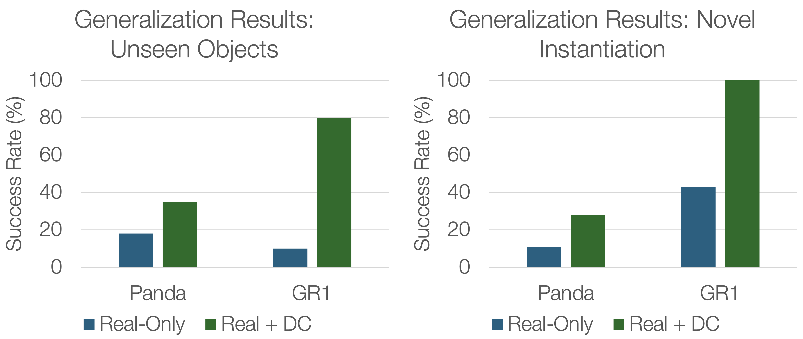
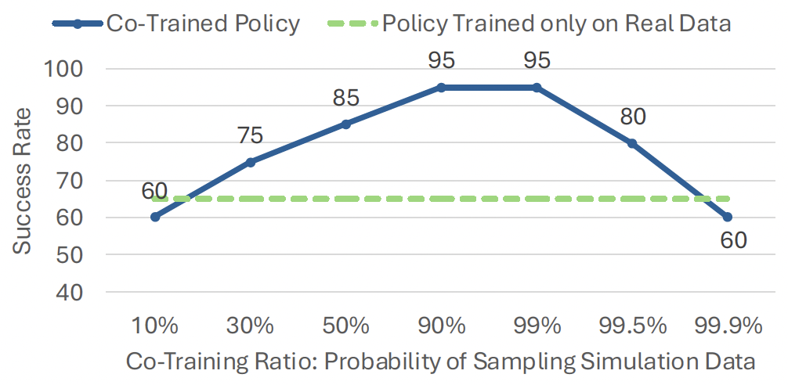
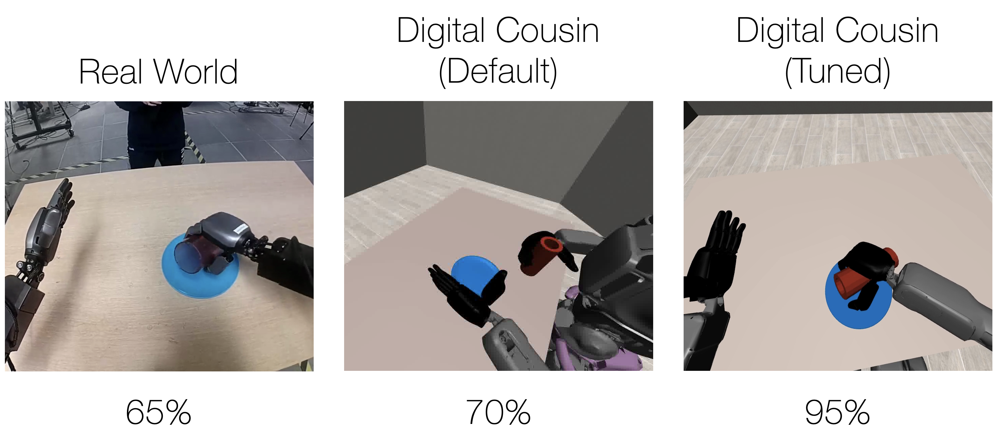
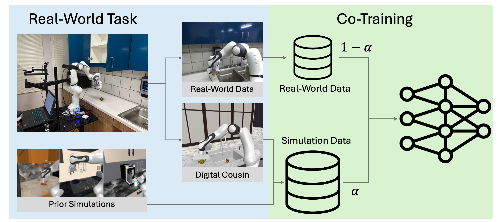

This work presents a simple recipe for effectively utilizing simulation data for real-world vision-based manipulation tasks.
We collect a modest number of demonstrations in real-world environments and use existing simulation frameworks to generate large-scale synthetic data. Across multiple embodiments and tasks that we study, simulation can offer a substantial improvement in performance even when the simulation and real-world data have significant discrepancies.
A Simple Recipe for Sim-and-Real Co-Training
Based on our empirical study, we recommend:
• Task and scene composition. Use task-aware digital cousins with similar task and scene compositions to real-world tasks. Multi-task prior simulation data can still help even with different compositions.
• Object composition and initialization. Incorporate diverse objects and varying placements in simulation to improve generalization.
• Task-aware digital cousin alignment. Ensure simulation tasks share the same definition and success criteria as real-world tasks. Similar camera viewpoints help, but perfect alignment isn't necessary.
• Co-training hyperparameters. Use significantly more simulation data than real-world data and carefully tune the co-training ratio.
Trained on Real-Only Data
Success Rate: 31%
Trained on Real + Task-Aware Digital Cousin
Success Rate: 71%
Trained on Real + Prior Simulation Data
Success Rate: 69%
Trained on Real + Prior Simulation Data + Task-Aware Digital Cousin
Success Rate: 76%
Recent advancements in robot learning suggest that policies trained with large-scale, multi-task real robot data are more robust and generalizable. To evaluate how far we can get with just real data, we designed a MultiTaskPnP task on the humanoid, where the robot needs to pick an object from one container and place it into another, with four different source-target container combinations. We collected 400 real demonstrations and trained a policy on them.
The results below show that the policy performs poorly, even with 400 real demonstrations. In contrast, our co-training strategy consistently outperforms the real-only policy, demonstrating the effectiveness of our co-training strategy.

We use 4000 simulation Digital Cousin (DC) demos and vary the number of real demos from 40 to 400 on task MultiTaskPnP. The results show that our co-training recipe remains beneficial in data-rich settings.
Creating a perfect digital twin copy of the real-world task is challenging, requiring extensive manual tuning, system identification, and sourcing identical 3D assets. Instead, we opt to create tasks in simulation that share the same task semantics, namely the object categories in the environment and the same behaviors. We call these task-aware digital cousins.
Digital Cousin
Real Demonstrations
Digital Cousin
Real Demonstrations
Digital Cousin
Real Demonstrations
Digital Cousin
Real Demonstrations
Digital Cousin
Real Demonstrations
We also take advantage of large-scale simulation datasets, which require no additional efforts on designing new tasks in simulation and collecting new data. These prior task-agnostic simulation datasets may have numerous discrepancies with real-world data, but they present a very simple and convenient way to leverage simulation data.
Prior Task-agnostic Simulation Data in our humanoid tabletop setup (10 tasks)
Cup PnP
Milk Box PnP
Pour
Bimanual Cube PnP
Sim-and-real co-training boosted perf by 37.9% on average across 6 tasks on 2 embodiments

We compare co-training with different simulation data on six tasks across two robots. Co-training with Prior consistently boosts performance over policies trained on real data only. On top of these results, adding better aligned DC usually further improves the performance.
Co-training with simulation data can generalize to novel object entities and poses unseen in the real-world dataset.

Unseen Object
Real-Only Policy (33%)
Co-Training Policy (50%)
Real-Only Policy (10%)
Co-Training Policy (80%)
Novel Object Position
Real-Only Policy (11%)
Co-Training Policy (28%)
Real-Only Policy (43%)
Co-Training Policy (100%)
Novel Object Color
Co-Training Policy (100%)
We conducted a comprehensive study to understand which dataset composition factors in simulation and real-world datasets matter the most, resulting in the recipe above. Our findings help practitioners effectively leverage synthetic simulation data for real-world robotics tasks.
Co-Training Ratio

Effect of the different co-training ratios, i.e., the percentage of simulation data sampled in each training step. We experiment on CupPnP task with 20 real demos and 1000 simulation demos from task-aware digital cousins. Tuning the co-training ratio is important for good performance of co-trained policies.
Camera Alignment

Visualization of the default and aligned camera views. To evaluate the importance of this alignment, we rendered data using the default, unaligned camera view and trained policies on the resulting misaligned simulation data. The results indicate a significant drop in performance compared to policies co-trained with properly aligned DC data. On the Panda arm CounterToSinkPnP task, the cotraining success rate dropped from 67% to 56%, while in the GR-1 humanoid CupPnP task, it declined from 95% to 70%. Notably, the aligned camera is not strictly identical to the real-world camera.

Sim-and-Real Co-training Pipeline. Left: We start with a real-world task in mind and some prior simulation data. Middle: Given real-world tasks and prior simulation data, we can build additional digital cousin tasks that share semantic similarities with their real-world counterparts but may still have discrepancies in visual and physical features. From here we can consolidate prior simulation data, digital cousin data, and real world data. Right: We co-train on a mixture of real-world and simulation data. We sample simulation data according to a sampling ratio of α, and as we show in experiments, this sample ratio is crucial. After training the policy, we deploy the resulting policy directly in the real world.
Given our observation that incorporating task-aware digital cousins, such as camera viewpoint alignment, enhances performance, we pose a follow-up question: Would improving visual fidelity by making simulation rendering closer to reality enhance co-training?
We fine-tune CogVideo-X, a video diffusion model, on CupPnP real demonstration videos in the Text2Video (T2V) modality. To adapt the model for style transfer on simulation videos—preserving object positions while enhancing visual realism—we adopt a simple strategy: instead of generating videos from pure noise, we introduce noise into reference simulation videos and use them as initialization for video diffusion. Lower noise levels retain more of the original simulation textures, producing outputs closer to the inputs, while higher noise levels result in more realistic appearances but may distort object poses.
We find that Vid2Vid-enhanced visual fidelity leads to a 5-10% average improvement in policy performance, with the most significant benefits occurring when the number of simulation or real-world trajectories is low.
We also explore an alternative strategy, where instead of using the RGB simulation video as noised input for T2V, we use the depth or segmentation video as the intermediate modality, where they are used as a conditioning for Video-to-Video (V2V) diffusion. This reduces the requirement of visual fidelity of the simulation videos, and we believe it opens up exciting opportunities for future research.
@article{maddukuri2025simandreal,
title = {Sim-and-Real Co-Training: A Simple Recipe for Vision-Based Robotic Manipulation},
author = {Maddukuri, Abhiram and Jiang, Zhenyu and Chen, Lawrence Yunliang and Nasiriany, Soroush and Xie, Yuqi and Fang, Yu and Huang, Wenqi and Wang, Zu and Xu, Zhenjia and Chernyadev, Nikita and Reed, Scott and Goldberg, Ken and Mandlekar, Ajay and Fan, Linxi and Zhu, Yuke},
journal = {arXiv preprint},
year = {2025}
}If you have any questions, please feel free to contact Zhenyu Jiang, Ajay Mandelkar, Jim Fan, and Yuke Zhu.